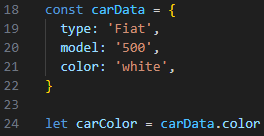

Javascript & the DOM
11 Sep 2023
JavaScript and its relationship to HTML and CSS
Like HTML and CSS, Javascript is a langeuge that runs on web browsers. Unlike CSS which controls the look and design of a web page, and unlike HTML which describes the content and layout, Javascript controls the functionality of the website. HTML is like a recipe's ingredients list, containing all the necessary information. CSS is the presentation of the recipe, and Javascript is like the the written instructions on the recipe, that control the process of making the meal.
Control flow and Loops
Control flow refers to the order of instructions / steps in a computer
program. If you think of control flow as in regular life, you could
think of it like the process of waking up, getting ready for class or
work, commuting there, working or studying, and then coming home etc.
In programming loops are a way of repeating a certain operation or set
of instructions in a consise way. Each weekday for many people is
realativly similar, so if life was like a copmuter program, you could
think of each day as part of a loop.
There are many kinds of loops in Javascript. Some examples of commons
loops are shown below. In each example, the loops all log each array
element to the console.
The DOM
The document object model (aka DOM) is a API interface that represents
a webpage when it loads. It contains lots of information about the
page, and enables different programming langeuges to interact with it
easily. The DOM follows a tree like structure, where each node in the
tree represents an object in the document. Many of these objects are
often HTML elements, which makes using the DOM very convieniet for
creating responsive webpages using a languege like Javascript.
In Javascript, here is an example of how you might access a HTML
element of the id 'box' using the DOM.
Arrays & Objects
Accessing data from arrays and objects in JavaScript is very
different. In an object, because objects contain singular organised
data, is as simple as specifying what peice of data you want using a
period (.).

Arrays on the other hand, can be a bit more complicated. Most of the
time you have to index the array using two square brackets with the
value inside being the index (position) of the data inside the array.
This creates another problem though, as it means you have to know the
correct index value to use to access the correct data inside the
array. This is often solved by programmers by using a loop, to cycle
through the array to find the correct peice of data they need from it.
Functions
Functions are handy features in programming the help to segment code and make it more re-uasable. Functions (also called methods) normally cover a certain aspect of the program. This function can then be 'called' anywhere in the scope as many times as need to execute that code.